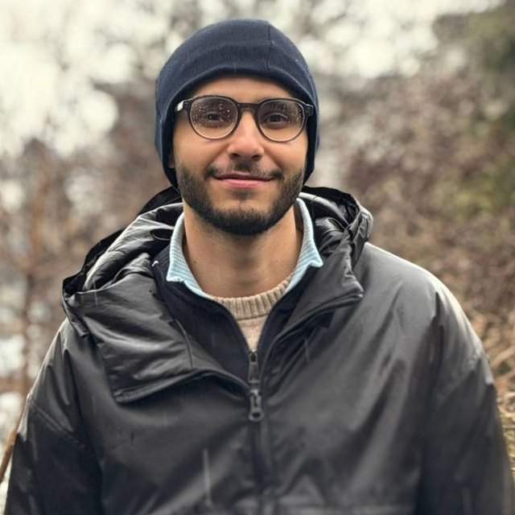

University of Tehran
Sep 2022 – expected Jan 2027
B.Sc. Electrical Engineering, Communications Systems. GPA 15.64/20.
Bachelor project: patient-level CIN2+ classification from colposcopy images.

University of Tehran · Electrical Engineering
I work on medical image analysis, using deep learning to support cervical screening from colposcopy images.
B.Sc. Communications Systems, Department of Electrical and Computer Engineering. Expected January 2027.
Research assistant Sep 2024 – present
Bachelor project with Dr. Ali Haghi (ECE, University of Tehran) and Dr. Fariba Yarandi (Gynecologic Oncology, Tehran University of Medical Sciences).
I did the engineering on this project: assembled the modeling cohort, trained and compared the CNNs, and ran the patient-level evaluation. The clinicians led recruitment, diagnosis, and interpretation.
Colposcopy is used to look for precancerous change on the cervix. The label that matters is the patient, not a single frame. I curated a histopathology-linked cohort of 492 patients and 790 acetic-acid images, including 78 CIN2+ cases (15.9%), and organized age, HPV status, and cytology. Data collection follows Swede score criteria.
For the published study, I trained convolutional networks in PyTorch to separate normal from abnormal colposcopy images. The comparison included ResNet-50, DenseNet-121, EfficientNetV2-S, MobileNetV3-Large, SE-ResNet-50, and ConvNeXt-Tiny, scored with sensitivity, specificity, PPV, and NPV.
I am developing a patient-level CIN2+ pipeline: ImageNet-pretrained ResNet-50 ensembles, aggregation across the images from each patient, late fusion with age, HPV, and cytology, and Grad-CAM. Splits are by patient (seed 42; 350 / 75 / 75) so frames from one person cannot leak between sets. The operating threshold is chosen on validation only, and uncertainty is a bootstrap 95% confidence interval.
The test numbers above are preliminary and come from an internal cohort. External validation is still outstanding.
I am also developing an abnormality-detection module for a hospital cervical-screening registry. It is meant to support the patient workflow, colposcopy imaging, follow-up, and guideline-based decision support.
F. Yarandi, E. Feizabad, E. Shirali, S. Ramhormozian, A. Haghi, A. Khoshdooni Farahani, A. H. Rahmani, and A. H. Nikusakhan. “Enhancing cervical cancer screening in low-resource settings: a deep learning-based decision support system using colposcopic images.” Tehran University Medical Journal, vol. 83, no. 12, pp. 848–855, March 2026.
Engineering author, listed directly after Dr. Haghi. The earlier authors are the clinicians. I built the modeling cohort, trained and compared the CNNs, and ran the reported evaluation.
Sep 2022 – expected Jan 2027
B.Sc. Electrical Engineering, Communications Systems. GPA 15.64/20.
Bachelor project: patient-level CIN2+ classification from colposcopy images.
Sep 2019 – Jun 2022
Diploma, National Organization for Development of Exceptional Talents. Selective national high school for gifted students.
Teaching assistant, School of Electrical and Computer Engineering Jan 2025 – present
Grades are out of 20.
VAEs and β-VAEs on dSprites, a masked autoregressive flow for anomaly detection on MVTec, and a CycleGAN for horse–zebra translation. Energy-based models and noise-conditional score networks on MNIST, DDPM compared with DDIM on FashionMNIST, and conditional flow matching on SPY log returns.
Adaline and Madaline from scratch, with a breast-cancer test accuracy of 0.906. An Xception network fine-tuned for remote-sensing scenes, at 93.1% validation accuracy. An improved Fast R-CNN for vehicle detection, CNN-LSTM and GRU models for stock prices, and a VampPrior VAE on binarized MNIST.
Convolution, histogram equalization, and median filtering, a Haar cascade for cat faces, and colorization with a convolutional autoencoder in Lab. With Deniz Mostafazadeghan and Sajjad Taghizade, a scene-classification CNN at 82.2% test accuracy, and a U-Net for photograph restoration at 22.99 dB PSNR and 0.863 SSIM.
An OFDM link with a 1024-point IFFT, 400 data subcarriers, a cyclic prefix, and differential QPSK. On AWGN the bit-error rate reached 0 from 12 dB upward. On block Rayleigh fading with zero-forcing it was about 0.020 at 30 dB. Header correlation recovered an unknown delay of 2028 samples.
Bandpass-sampling rates for a 5 kHz band at 20 kHz, checked with a chirp. An FM broadcast receiver in GNU Radio on an RTL-SDR. Four linear-phase Hamming FIR filters at 32 kHz, checked for passband gain, stopband attenuation, group delay, and zeros.
A waveguide-fed pyramidal horn at 6 GHz in Ansys HFSS. S11 was −26.5 dB, and stayed below −10 dB from 4 to 10 GHz. Peak gain 15.6 dB, peak directivity 15.4 dBi, front-to-back ratio 19.2 dB.
A blocking TCP client and server in C and in Python, and a multi-client chat on localhost. Ethernet and IP headers in Wireshark, with traces of ARP, DHCP, DNS, and HTTP.